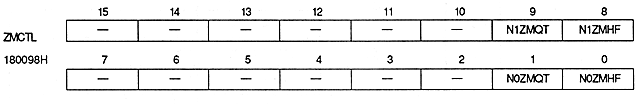

Zoom enable bit : Zoom quarter / half bit (N1ZMQT, N1ZMHF, N0ZMQT, N0ZMHF)
| N0ZMHF | 180098H | Bit 0 | For NBG0 |
| N0ZMQT | 180098H | Bit 1 | For NBG0 |
| N1ZMHF | 180098H | Bit 8 | For NBG1 |
| N1ZMQT | 180098H | Bit 9 | For NBG1 |
| NxZMQT | NxZMHF | Horizontal reduction display | Restrictions | |
| 0 | 0 | No | None | |
| 0 | 1 | Up to 1/2 | 16 or 256 colors Can only be set in case of | |
| 1 | 0 | 1/4 possible | When the number of character colors is 16 Can only be set | |
| 1 | 1 | Up to 1/4 possible | When the number of character colors is 16 Can only be set |
For reduction to 1/2, set the number of character colors (bitmap pattern colors) on the corresponding screen to 16 or 256 colors. Set the reduction to 1/4 to 16 colors.
∙ Make sure that the horizontal coordinate increment does not exceed the setting range of these bits.